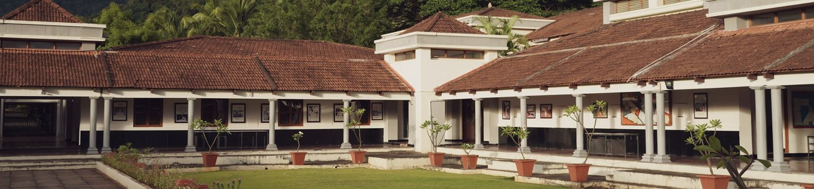

Central Board of Secondary Education, New Delhi
CBSE senior streams
- Grades
- V to XII at CIRS; streams in XI and XII
- Structure
- One stream: English, its core subjects and electives
- Assessment
- CBSE Board examinations in Grades X and XII

| Stream | Core subjects |
|---|---|
| Engineering | English, Physics, Chemistry, Mathematics |
| Medicine | English, Physics, Chemistry, Biology |
| Management | English, Business Studies, Accountancy, Economics |
Electives and this year’s combinations: ask about CBSE subjects.